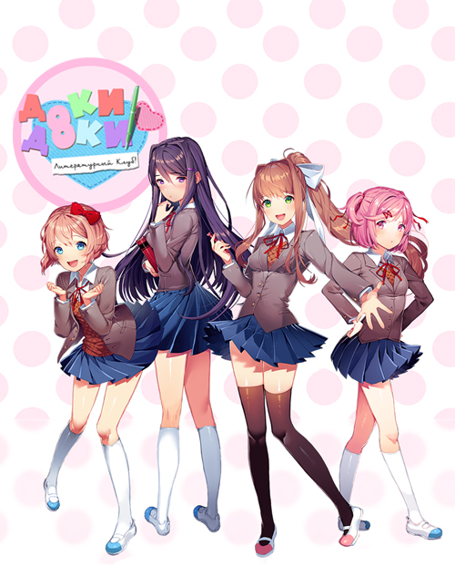

доки доки!!
милая хоррор игра

сюжет
«Doki Doki Literature Club!» — это психологический хоррор, замаскированный под милое аниме-симулятор свиданий. Сюжет повествует о школьнике, который по приглашению подруги детства Саёри вступает в литературный клуб, где знакомится с другими участницами (Юри, Нацуки и президентом клуба Моникой), но постепенно игра «ломается», превращаясь в кошмар из-за действий Моники, осознавшей себя
дітальніше